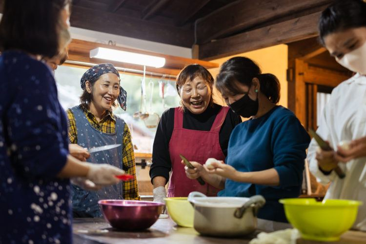
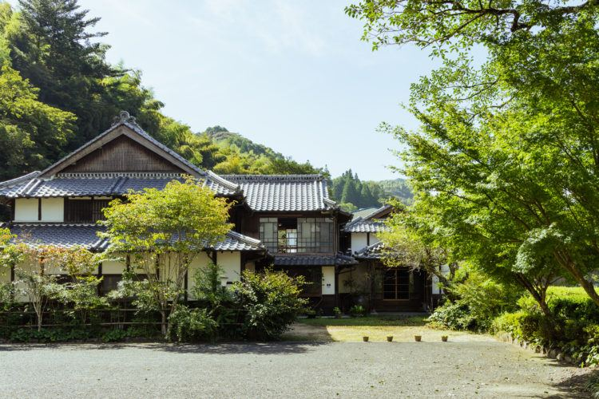

DAY 1 · OPTION 1
Satoyama Living: Everyday Lessons
Former Ouchi Residence / Odotani no Sato · Tachibana

WhenOct 11, 13:00 to 16:30
CapacityMax 6
Getting thereBus
MealSatoyama lunch included (has meat dishes)
About the place
A half day in the hills of Tachibana: a satoyama lunch cooked by local mothers, then konnyaku made the old way with wood ash. Lunch is at the Former Ouchi Residence, birthplace of Ouchi Chozo, a politician who worked for friendship between Japan and China from the Meiji to the early Showa era. A local preservation group restored the house and reopened it in April 2023.
What to see
- A satoyama lunch made from local seasonal food
- Making konnyaku with Nakashima-san of Odotani no Sato, set with wood ash
- The Former Ouchi Residence and the story of saving it
Why it matters
Know-how around pickles, konnyaku, bamboo craft and mountain work is not reaching the next generation. Here, cooking for guests is a way to keep that culture alive.
QUESTION TO CARRYHow can a skill that is only used for guests come back into daily life?